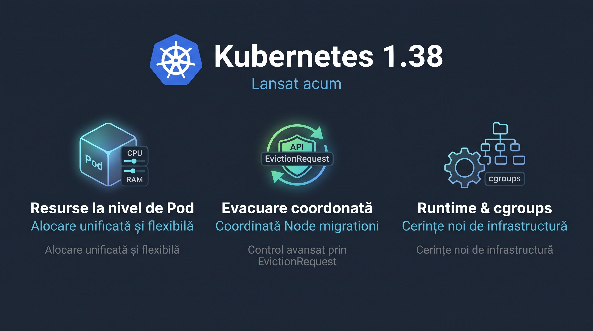

Kubernetes 1.38: Alocare a resurselor la nivel de Pod, evacuare coordonată prin EvictionRequest și cerințe noi pentru runtime-uri și cgroups

Echipa Kubernetes a publicat o previzualizare a viitoarei versiuni Kubernetes 1.38, programată pentru lansare pe 16 decembrie 2026. Actualizarea aduce în stadiul de disponibilitate generală (General Availability) definirea resurselor la nivel de Pod și partiționarea dispozitivelor GPU prin DRA, introduce un mecanism coordonat de evacuare a Pod-urilor și impune cerințe mai stricte privind detectarea driverului cgroup de către runtime-urile de containere.
1. Gestionarea resurselor (Pod-level și GPU DRA) și evacuări coordonate
Resurse la nivel de Pod (General Availability): Administratorii pot defini cerințele (requests) și limitele (limits) pentru CPU, memorie și hugepages pentru un întreg Pod, în loc să le configureze individual pentru fiecare container din cadrul acestuia.
Partiționarea GPU-urilor în DRA (Stable): Suportul pentru dispozitive partiționabile în Dynamic Resource Allocation (DRA) devine stabil, permițând driverelor DRA să expună un dispozitiv fizic (precum un GPU) atât ca unitate completă, cât și sub formă de partiții mai mici, astfel încât planificatorul să aloce sarcinile în limitele hardware-ului fizic.
API-ul
EvictionRequest(Alpha): Introduce o abordare coordonată pentru evacuarea Pod-urilor, permițând aplicațiilor și controllerelor să se pregătească înainte de terminare (finalizarea operațiunilor în curs, curățarea resurselor sau migrarea datelor). Dacă aplicația nu răspunde sau eșuează, sistemul revine automat la API-ul clasic de evacuare, iar regulile existentePodDisruptionBudgetsrămân active.
2. Configurarea CLI (kuberc) și schimbări critice pentru Runtime / cgroup
Stabilizarea
kuberc(General Availability): Separă preferințele utilizatorului pentrukubectl(alias-uri de comenzi, opțiuni implicite și politici pentru plugin-urile de autentificare) de setările de conectare la cluster stocate în fișierelekubeconfig.Detectarea obligatorie a driverului
cgroupprin CRI: Componentakubeletva solicita runtime-urilor de containere să raporteze driverulcgrouprecomandat direct prin CRI (Container Runtime Interface). Vechiul mecanism de configurare este dezactivat implicit (câmpulcgroupDriverdin configurațiakubeletfiind marcat ca depreciat), ceea ce înseamnă că runtime-urile incompatibile pot împiedica înregistrarea nodurilor în cluster dacă nu este activat temporar feature gate-ulLegacyCgroupDriverFallback.Calculul swap-ului pe Linux (
cgroup v2) și retragereacgroup v1: Pe nodurile Linux care folosesccgroup v2și configurațiaLimitedSwap, limitele de swap sunt calculate acum pe baza setărilor de memorie la nivel de Pod (Pod-urile cu requests și limits egale primesc alocare zero de swap, chiar dacă containerele individuale au setări diferite). Totodată, deși opțiunea temporarăfailCgroupV1: falserămâne disponibilă în 1.38, suportul pentrucgroup v1urmează să fie eliminat complet într-o versiune viitoare.Curățare în
kubectl: Sunt eliminate variabilele de mediuKUBECTL_REMOTE_COMMAND_WEBSOCKETSșiKUBECTL_PORT_FORWARD_WEBSOCKETS, protocoalele WebSockets rămânând implicite cu fallback automat la SPDY atunci când este necesar.